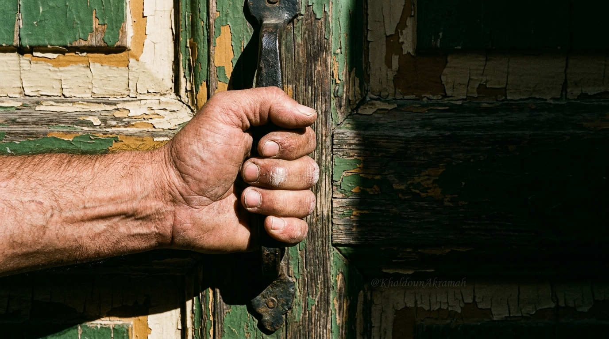

السادس من أيلول، عام ألفين وأحد عشر
في ذلك اليوم، لم يحمل السوريون سلاحاً.
حملوا أجسادهم — وكان هذا كافياً.
في ذلك الصباح من أيلول 2011، كان ثمة لحظة واحدة قاطعة: الوقوف خلف باب موصد، يد على المقبض، والقرار ثقيل كالرصاص في الهواء.
لم يكن ثمة ضمان بالعودة. كان ثمة فقط يقين بأن البقاء خلف هذا الباب هو الموت الأبطأ والأكثر إهانة.
ففتحوا الأبواب.
"الخوف لا يموت بالكلام.
يموت حين تفتح الباب وتمشي."

خرجوا من أزقة حمص كما يخرج الماء من الصخر. لم تكن مسيرة — كانت فيزياء. جسد يتبع جسداً، شارع يمتلئ بما لا يمكن إيقافه.
علم الثورة — الأخضر والأبيض والأسود والنجمات الثلاث الحمراء — كان يُحمل بيد لم تكن تعرف إذا ستحمل شيئاً آخر في اليوم التالي.
ومع ذلك حملته.
"حمص لم تُطلق الثورة.
حمص كانت الثورة."
حمص · أيلول ٢٠١١
أطلقت عصابة الأسد رصاصها على من خرج يمشي. هذه ليست استعارة. هذه وقائع تضمها سجلات الجنائية وشهادات من صمدوا.
الشوارع فرغت — ولم تخلُ. الغياب الذي خلّفه الرصاص كان أعلى صوتاً من أي هتاف.
والأقدام لم تتوقف.
"الرصاص يصنع شهيداً واحداً.
الشهيد يصنع ألف خارج."
حمص · الرصاص والصمت · ٢٠١١
كان للثورة جذر واحد: درعا. المدينة التي أدركت قبل غيرها أن الكرامة ليست مطلباً إضافياً — هي الشرط الأدنى للحياة.
رجال درعا رفعوا أذرعهم لا بالبطولة الخطابية، بل بالثقل الهادئ لمن يعرف أن التاريخ يكتب هذه اللحظة.
وكتبها.
"درعا لم تسقط في أيدي المحررين.
درعا أطلقت المحررين."
درعا · مهد الثورة · ٢٠١١
الكرسي الفارغ لا يحتاج أن يُشرح. كل واحد من هؤلاء الشهداء ترك كرسياً فارغاً على طاولة — في بيت، في مدرسة، في ورشة، في ملعب.
الوفاء لهم ليس في الكلام. الوفاء هو أن نعرف أسماءهم، وأن نبني ما كانوا يحلمون أن يبنوه بأيديهم.
"الشهيد لا يموت حين يسقط.
يموت حين نتوقف عن ذكر اسمه."
الكرسي الفارغ · ٢٠١١
اليوم، تضع حكومة الثورة السورية أولى طوبات البناء الحقيقي. ليس بناء مبانٍ فقط — بناء عقد اجتماعي جديد يستحق دماء أيلول.
كل لبنة تُوضع هي رد مادي ملموس على كل رصاصة أُطلقت. وكل صباح تعمل فيه هذه الحكومة هو وفاء صامت لذاكرة السادس من أيلول 2011.
"الذاكرة ليست ترفاً.
هي الأساس الذي يُبنى عليه كل شيء."
حكومة الثورة · سوريا تبني · ٢٠٢٦